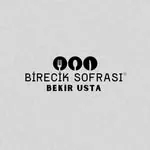
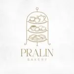
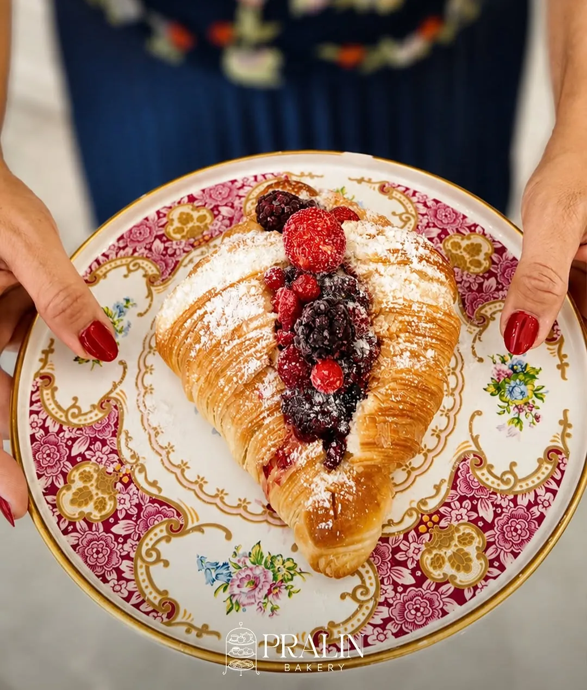

Calisqa Software · Marka kitleri
Her işletmeye kendi renk sistemi.
Renkler logodan, tabelalardan ve ürünün kendisinden geliyor: tavanın sarısı, isotun bordosu, inciri yaprağı, domatesin kırmızısı. Her kitte zemin, vurgu, ikincil ve üçüncül renkler, yazı karakteri ve işletmeye özel bir desen var. Bu panoları işletmeye siteyle birlikte gösterebilirsiniz.
İncir bahçesi
Akla Restaurant
İncir ağacının altında
#EEF0E7#2F4A3A#7A3554#C98476#DFE7D2#1B211C Fotoğraf dili
Fotoğraf diliBu akşam bir masa?
Salon, incir ağaçlı bahçe ya da Akla Pub.

Esnaf lokantası
Namık Baydar Sofrası
Beğendiğini seç, aldığın kadar öde
#F4F0E4#F3B80B#4D5A26#5B6B2F#9C3D24#FBE7A8#17150F Fotoğraf dili
Fotoğraf diliKalabalık mı geliyorsunuz?
350 kişilik salon; tur, okul ve şirket grupları için.

Manav tezgâhı
Sofdağı Manav
Tarladan tezgâha
#F2F5EA#C4342A#2F7D3C#F2B632#F9DDD4#1C261D Fotoğraf dili
Fotoğraf diliSepetiniz WhatsApp'ta
Listenizi hazırlayın, tek mesajla gönderin.

Ateş ve tava
Usta Tavacı
Gaziantep'in tavacısı
#F6F0E3#F2C230#B3391B#44702C#E2772B#F8E6AA#1F1810 Fotoğraf dili
Fotoğraf diliToplu yemek siparişi
Davetler, toplantılar ve kalabalık sofralar için.

Fırat kıyısı sofrası
Birecik Sofrası Bekir Usta

Birecik SofrasıHerkesin sofrası
#F4EAD9#8C1D22#D99A2B#4B2A4D#F1DCBA#2A1712 Fotoğraf dili
Fotoğraf diliKapatmadık, taşındık
Aynı ustalık, aynı lezzet. Şimdi Duisburg Bulvarı'nda.

Vintage pastane
Pralin Bakery

Pralin BakeryBir kruvasandan çok daha fazlası
#F7EEEA#A3285A#7D1D45#7F9550#C08B4C#F6DDE5#2E1C20
Fotoğraf diliDoğum günleri Pralin'de
Doğum günü, nişan ve küçük sürprizler için pasta siparişi.